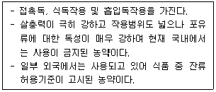
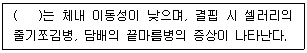

식물보호기사 (2020-09-26 기출문제)
1과목: 식물병리학
1. 다음 중 죽은 식물체에 증식하지 못하는 병원체는?
- 끈적균
- 바이러스
- 세균
- 진균
(정답률: 78%)

2. 식물바이러스를 옮기는 매개충 중 구침전염형(Stylet-borne) 바이러스에 해당하는 것으로 가장 옳은 것은?
- 진딧물
- 멸구
- 매미충
- 가루이
(정답률: 69%)
3. 토양에 열처리하여 소독하는 것은 무슨 방제법인가?
- 생물학적 방제법
- 재배적 방제법
- 화학적 방제법
- 물리적 방제법
(정답률: 85%)
4. 어떤 식물병에 대하여 저항성이었던 품종이 갑자기 해당 식물병에 감수성이 되는 주된 원인은?
- 재배법의 변화
- 병원균 집단의 변화
- 기상의 변화
- 기주체내 영양성분의 변화
(정답률: 83%)
5. 다음 식물병의 진단법 중 이화학적 진단에 해당하는 것은?
- 현미경 관찰
- 황산동법
- 한천겔내 확산법
- 최아법
(정답률: 70%)
6. 불완전균류의 정의로 가장 옳은 것은?
- 균사의 형성이 불완전한 균류
- 무성세대가 밝혀지지 않은 균류
- 기주범위가 밝혀지지 않은 균류
- 유성세대가 밝혀지지 않은 균류
(정답률: 70%)
7. 배나무 검은별무늬병의 방제에 가장 효과적인 것은?
- 밀식
- 약제살포
- 포장위생
- 합리적인 비배관리
(정답률: 65%)
8. 벼 흰잎마름병이 발생할 수 있는 환경조건으로 가장 옳지 않은 것은?
- 침수
- 가뭄
- 일조부족
- 질소질비료 다용
(정답률: 73%)
9. 병원균이 세균인 것은?
- 벼 깨씨무늬병
- 토마토 풋마름병
- 포도 탄저병
- 감자 역병
(정답률: 67%)
10. 밀 줄기녹병균의 중간기주로 가장 옳은 것은?
- 낙엽송
- 까치밥나무
- 향나무
- 매자나무
(정답률: 75%)
11. 다음 중 벼 흰잎마름병에 대한 설명으로 옳지 않은 것은?
- 병원균이 1차전염원인 겨풀에서 월동한다.
- 병원균의 학명은 Xanthomonas oryzae pv. oryzae 이다.
- 병원균이 잎 선단의 수공이나 상처부위를 통해 침입한다.
- 병원균은 그람 양성균이다.
(정답률: 76%)
12. 다음 중 인공배양이 가장 불가능한 것은?
- 사과 탄저병
- 벼 도열병
- 보리 흰가루병
- 딸기 잿빛곰팡이병
(정답률: 52%)
13. 다음 중 벼 키다리병의 방제법으로 가장 효과적인 것은?
- 매개충 방제
- 윤작
- 종자소독
- 토양소독
(정답률: 74%)
14. 하우스 내의 습도가 높을 때 채소에 가장 많이 발생하는 공기전염성 식물병은?
- 흰가루병
- 뿌리혹병
- 시들음병
- 잿빛곰팡이병
(정답률: 79%)
15. 다음 중 인삼 또는 당근의 뿌리에 혹과 같은 병징을 일으키는 것으로 가장 옳은 것은?
- 뿌리혹박테리아
- 노균병균
- 뿌리혹선충
- 더뎅이병균
(정답률: 75%)
16. 다음 중 감자 역병 발병의 최적 환경으로 가장 옳은 것은?
- 기온이 20℃ 내외이고 습기가 많은 곳
- 기온이 30℃ 내외이고 건조한 곳
- 기온이 40℃ 내외이고 건조한 곳
- 기온이 45℃ 이상이고 습기가 많은 곳
(정답률: 77%)
17. 어떤 병원체가 식물체내에 침입되어 병징이 나타나기까지의 기간을 무엇이라 하는가?
- 잠복기
- 사멸기
- 유도기
- 증식기
(정답률: 88%)
18. 병원균의 중간기주가 향나무인 병은?
- 잣나무 털녹병
- 밀 줄기녹병
- 소나무 혹병
- 배나무 붉은별무늬병
(정답률: 79%)
19. 맥류 흰가루병의 2차 전염은 어떤 포자의 비산에 의하여 이루어지는가?
- 분생포자
- 자낭포자
- 수포자
- 난포자
(정답률: 50%)
20. 균사가 모여 구형 또는 입상의 검은색 덩어리를 형성한 것으로 불리한 환경조건에서도 생존할 수 있는 것은?
- 포자퇴
- 균핵
- 분생포자
- 균사
(정답률: 76%)
2과목: 농림해충학
21. 다음 중 누에의 식성으로 가장 적절한 것은?
- 광식성
- 단식성
- 잡식성
- 부식성
(정답률: 70%)
22. 다음 중 곤충의 중추신경계가 아닌 것은?
- 전대뇌
- 측대뇌
- 중대뇌
- 후대뇌
(정답률: 69%)
23. 다음 중 암컷의 생식계에 해당하는 것은?
- 수정낭
- 정소
- 수정관
- 사정관
(정답률: 74%)
24. 다음 중 곤충의 배설을 담당하는 기관은?
- 알라타체
- 말피기소관
- 존스턴기관
- 모이주머니
(정답률: 81%)
25. 다음 중 완전변태를 하는 것은?
- 노린재목
- 메뚜기목
- 파리목
- 총채벌레목
(정답률: 65%)
26. 곤충의 방어물질에 대한 설명으로 틀린 것은?
- 곤충의 방어물질을 총칭 카이로몬이라고 한다.
- 사회성 곤충에서는 독샘에서 분비하는 방어물질들이 대부분 효소들이다.
- 곤충의 방어샘에서 동정된 화합물로는 알칼로이드, 테르페노이드, 퀴논, 페놀 등이 있다.
- 비사회성 곤충에서는 방어물질 중 개미들의 경보 페로몬과 같거나 비슷한 구조의 화합물도 있다.
(정답률: 68%)
27. 풀잠자리목의 특징에 대한 설명으로 가장 거리가 먼 것은?
- 완전변태를 한다.
- 더듬이는 짧고 흩눈이 3개이다.
- 생물적 방제에 이용된다.
- 유충과 성충은 대부분 포식성이다.
(정답률: 68%)
28. 다음 중 반전현상(resurgence)에 대한 설명으로 옳은 것은?
- 한 약제에 대하여 저항성을 나타내는 계통이 다른 약제에는 도리어 감수성인 현상
- 약제처리 후 해충밀도의 회복 속도가 매우 느린 현상
- 해충이 3종 이상의 약제에 대하여 저항성을 나타내는 현상
- 약제처리 후 해충밀도의 회복 속도가 급격하게 빨라지는 현상
(정답률: 59%)
29. 다음 중 유시류에 속하는 것은?
- 톡토기
- 낫발이
- 좀붙이
- 하루살이
(정답률: 73%)
30. 다음 중 거미강의 특징에 대한 설명으로 옳은 것은?
- 변태를 한다.
- 곁눈과 홑눈으로 되어 있다.
- 몸의 구분은 머리·가슴과 배의 2부분으로 되어 있다.
- 더듬이를 가지고 있어 이동이 빠르다.
(정답률: 70%)
31. 곤충의 종간상호작용에 포함되지 않은 것은?
- 경쟁
- 밀도
- 공생
- 포식자 – 먹이상호작용
(정답률: 67%)
32. 다음 중 소나무재선충을 옮기는 매개충으로 가장 옳은 것은?
- 땅강아지
- 알락하늘소
- 솔수염하늘소
- 털두꺼비하늘소
(정답률: 74%)
33. 다음 중 농약의 부작용에 대한 설명으로 가장 거리가 먼 것은?
- 동물상의 복잡화
- 약제저항성 해충의 출현
- 잠재적 곤충의 해충화
- 자연계의 평형 파괴
(정답률: 77%)
34. 곤충의 표피층에 대한 설명으로 틀린 것은?
- 표피세포는 표피를 이루는 단백질, 지질, chitin화합물 등을 합성·분비한다.
- 외원표피층은 탈피과정에서 모두 소화, 흡수되어 재활용된다.
- 외표피층은 수분의 증산을 억제해주는 기능을 한다.
- 기저막은 일정한 모양이 없는 비세포성 연결조직이다.
(정답률: 62%)
35. 곤충 더듬이의 마디 중 수컷이 암컷의 날개 소리를 잘 듣도록 발달된 존스턴기관이 있고, 비행 중 바람의 속도를 측정하는 감각기들이 집중되어 있는 마디는?
- 채찍마디
- 자루마디
- 기본마디
- 팔굽마디
(정답률: 61%)
36. 곤충이 불리한 환경조건에서 대사와 발육이 정지되었다가 환경조건이 좋아지면 정상상태로 회복되는 반응은?
- 사면
- 휴지
- 분산
- 적응
(정답률: 77%)
37. 이세리아깍지벌레의 방제를 위해 이용하는 곤충으로 가장 적합한 것은?
- 노랑좀벌
- 왕노린재
- 베달리아무당벌레
- 꽃등에
(정답률: 70%)
38. 다음 중 고자리파리에 대한 설명으로 틀린 것은?
- 유충이 땅속에 살면서 뿌리를 가해한다.
- 마늘에 피해를 주는 해충이다.
- 1년에 1회 발생한다.
- 미숙퇴비를 시용하면 많이 발생한다.
(정답률: 69%)
39. 1세대를 경과하는데 가장 긴 시간을 필요로 하는 것은?
- 알락하늘소
- 장수풍뎅이
- 말매미
- 소나무좀
(정답률: 70%)
40. 다음 설명에 해당하는 살충제는?

- 니코틴
- 피레스린
- 파라티온
- 지베렐린
(정답률: 71%)
3과목: 재배학원론
41. 다음 중 벼의 관수해(冠水害)가 가장 심하게 나타나는 수질은?
- 흐르는 맑은 물
- 흐르는 흙탕물
- 정체한 맑은 물
- 정체한 흙탕물
(정답률: 80%)
42. 다음 중 요수량(要水量)이 가장 적은 작물은?
- 오이
- 호박
- 클로버
- 옥수수
(정답률: 69%)
43. 벼에서 염해가 우려되는 최소 농도는?
- 0.1% Nacl
- 0.4% Nacl
- 0.7% Nacl
- 0.9% Nacl
(정답률: 67%)
44. 다음 중 장과류에 해당하는 것으로만 나열된 것은?
- 배, 사과
- 복숭아, 앵두
- 딸기, 무화과
- 감, 귤
(정답률: 66%)
45. 우량품종 종자갱신의 채종체계는?
- 원종포 → 원원종포 → 채종포 → 기본식물포
- 기본식물포 → 원원종포 → 원종포 → 채종포
- 채종포 → 원원종포 → 원종포 → 기본식물포
- 기본식물포 → 원종포 → 원원종포 → 채종포
(정답률: 68%)
46. 종자의 수명이 5년 이상인 장명종자로만 나열된 것은?
- 가지, 수박
- 메밀, 고추
- 해바라기, 옥수수
- 상추, 목화
(정답률: 66%)
47. C3식물과 C4식물의 광합성 특성에 대한 설명으로 틀린 것은?
- C4식물은 유관속초세포가 잘 발달하였다.
- C4식물은 크란츠(kranz)구조가 잘 발달하였다.
- C3식물은 유관속초세포가 발달하지 않거나 있어도 엽촉체가 적고, C4식물은 유관속초세포에 다수의 엽록체가 있다.
- C3식물은 엽육세포에서 합성한 유기산이 유관속초세포로 이동하여 그곳에서 분해되고 재고정되어 자당이나 전분으로 합성된다.
(정답률: 63%)
48. 다음 중 최적용기량이 가장 낮은 작물은?
- 강낭콩
- 보리
- 양파
- 양배추
(정답률: 49%)
49. 산성토양에 가장 약한 작물로만 나열된 것은?
- 시금치, 양파
- 땅콩, 기장
- 감자, 유채
- 토란, 양배추
(정답률: 58%)
50. 영양번식법 중 휘묻이에 해당하지 않는 것은?
- 선취법
- 파상취목법
- 당목취법
- 고취법
(정답률: 61%)
51. 재배의 기원지가 중앙아시아에 해당하는 것은?
- 대추
- 양배추
- 양파
- 고추
(정답률: 57%)
52. 다음 중 알줄기에 해당하는 것은?
- 글라디올러스
- 생강
- 박하
- 호프
(정답률: 65%)
53. 국화의 주년재배와 가장 관계가 있는 것은?
- 온도처리
- 광처리
- 수분처리
- 영양처리
(정답률: 71%)
54. 다음 중 장일식물의 화성을 촉진하는 효과가 가장 큰 물질은?
- AMO-1618
- MH
- CCC
- Gibberellin
(정답률: 74%)
55. ( )에 알맞은 내용은?

- 붕소
- 구리
- 염소
- 규소
(정답률: 73%)
56. 다음 중 작물의 주요온도에서 최적온도가 가장 낮은 것은?
- 삼
- 멜론
- 오이
- 담배
(정답률: 59%)
57. [(A×B)×B]×B로 나타내는 육종법은?
- 다계교잡법
- 여교잡법
- 파생계통육종법
- 집단육종법
(정답률: 75%)
58. 다음 중 적산온도가 가장 낮은 것은?
- 벼
- 메밀
- 담배
- 조
(정답률: 61%)
59. 다음 중 굴광현상에서 가장 유효한 파장은?
- 120~250 nm
- 440~480 nm
- 600~680 nm
- 700~750 nm
(정답률: 74%)
60. 답전윤환의 주요 효과로 틀린 것은?
- 지력증강
- 기지의 회피
- 병충해 증가
- 잡초의 감소
(정답률: 79%)
4과목: 농약학
61. 농약의 입제(粒劑)에 대한 설명으로 틀린 것은?
- 표류, 비산에 의한 오염의 우려가 없다.
- 제조과정이 다른 제형보다 간단하고 값이 저렴하다.
- 입자가 크므로 농약을 살포하는 농민에 대하여 안전성이 높다.
- 다른 제형에 비하여 많은 양의 주성분을 투여해야 목적하는 방제효과를 얻을 수 있다.
(정답률: 47%)
62. 석회유황합제 제조 시 생석회와 황의 중량비로 옳은 것은?
- 생석회(2) : 황(1)
- 생석회(1) : 황(2)
- 생석회(3) : 황(1)
- 생석회(1) : 황(1)
(정답률: 56%)
63. 농약의 약효를 높이기 위한 방법으로 가장 거리가 먼 것은?
- 알맞은 농약의 선택
- 방제 적기에 농약살포
- 적정농도 및 정량살포
- 한 가지 농약의 집중사용
(정답률: 82%)
64. 12% 다이아지논 원제 1kg을 2% 다이아지논 분제로 만들려면 소요되는 보조제의 양(kg)은?
- 5
- 10
- 15
- 20
(정답률: 65%)
65. 모든 제형의 농약의 약효보증기간을 설정하기 위한 시험방법에 해당하는 것은?
- 확산성 시험
- 가열안정성 시험
- 저온안정성 시험
- 내열내한성 시험
(정답률: 49%)
66. 잔디의 생장억제 기능을 하는 농약은?
- 4-CPA
- 1-naphthylacetamide
- trinexapac-ethyl
- maleic hydrazide
(정답률: 47%)
67. 식물의 병반이나 상처부위에 직접 발라서 병을 방제하는 방법은?
- 분의법
- 관주법
- 도포법
- 독이법
(정답률: 79%)
68. 농약 흡입 및 노출 시 가장 적절하지 않은 조치는?
- 약물을 경구적으로 흡입 시 위내의 약물을 토하게 한다.
- 위내의 약물을 토하게 하는 데는 일반적으로 따뜻한 소금물을 마시게 한다.
- 산성, 알칼리성이 강한 점막부식성인 것을 마셨을 때는 식염수나 황산동을 사용한다.
- 경피적으로 중독된 경우에는 옷을 벗기고 비눗물로 깨끗이 씻는다.
(정답률: 57%)
69. 유제가 갖추어야 할 구비조건으로 가장 거리가 먼 것은?
- 물로 희석하였을 때 유효성분이 석출되지 않고 유탁액을 만드는 유화성
- 유효성분이 보존 또는 사용 중 분해되거나 변화하지 않는 안전성
- 살포 후 작물이나 해충의 표면에 고르게 퍼지고 부착하는 확전성
- 가수분해의 우려가 없고 물에 잘 녹는 수용성
(정답률: 61%)
70. 30% 메프(MEP)유제(비중 1.0) 100mL로 0.⑤%의 살포액을 만들려고 한다. 이 때 소요되는 물의 양(mL)은?
- 59900
- 69900
- 79900
- 89900
(정답률: 67%)
71. 다음 천연 제충국 성분 중 살충력이 가장 강한 것은?(오류 신고가 접수된 문제입니다. 반드시 정답과 해설을 확인하시기 바랍니다.)
- Cinerin Ⅰ
- Pyrethrin Ⅰ
- Pyrethrin Ⅱ
- Jasmolone Ⅱ
(정답률: 55%)
72. 다음 농약 중 살균제가 아닌 것은?
- mancozeb
- mepronil
- thiram
- parathion
(정답률: 60%)
73. 만코제브 원제에 함유한 ETU(Ethylene thiourea)는 발암성이 높은 화합물로 지정되어 규제하고 있다. 농약관리법령상 이 물질의 규제 기준은?
- 0.01% 이하
- 0.⑤% 이하
- 0.1% 이하
- 0.5% 이하
(정답률: 36%)
74. NOAEL(No Observed Adverse Effect Level)이란?
- 일일섭취허용량
- 식품 중 잔류농약의 허용기준
- 농약이 잔류할 우려가 있는 식품 중의 농약잔류평균
- 일생동안 매일 섭취하여도 아무런 영향을 주지 않는 약량
(정답률: 65%)
75. 농약관리법령상 농약의 급성독성에 대한 내용으로 틀린 것은?
- 농약을 단 1회 투여하여 생물집단에 대한 독성을 평가하는 것이다.
- 독성정도는 생물집단의 반수가 치사되는 양으로 평가한다.
- 농약이 살포된 농산물을 섭취하는 소비자에 대한 독성평가를 위한 것이다.
- 급성독성 정도에 따른 구분은 Ⅰ~Ⅳ급까지이다.
(정답률: 61%)
76. 잔류농약의 피해대책을 위하여 농약의 잔류허용기준, 반감기 및 반치사농도(LC50)등에 따라 잔류성 농약을 구분하는데 이에 해당하지 않는 것은?
- 작물잔류성 농약
- 식품잔류성 농약
- 토양잔류성 농약
- 수질오염성 농약
(정답률: 61%)
77. 유제 토입원료 중 계면활성 작용을 하는 화합물은?
- xylene
- epichlorohydrin
- polyoxyethylene
- O,O-diethyl O-(p-nitrophenyl)phosphate
(정답률: 57%)
78. 농약관리법령상 농약에 해당하는 것으로 옳은 것은?
- 농작물을 해하는 균, 곤충, 응애 등의 방제에 사용하는 살균제, 살충제, 제초제 및 농작물의 생리기능을 증진 또는 억제하는데 사용하는 약제
- 농작물의 생장을 저해하는 병충해의 방제에 사용하는 유제, 액제, 분제, 입제와 약효를 증진시키는 자재
- 농작물의 생장을 저해하는 병충해의 방제에 사용하는 살충제, 살균제, 제초제, 살비제 및 생장촉진제
- 농작물의 생장을 저해하는 병충해의 방제에 사용하는 살균제, 살충제, 제초제, 살비제, 보건용 약제와 약효를 증진시키는 자재
(정답률: 60%)
79. 제초제의 살초기작이 아닌 것은?
- 신경전달 저해
- 광합성 저해
- 에너지생성 저해
- 세포분열 저해
(정답률: 53%)
80. 곤충을 질식시켜 치사시키는 물리적 작용을 갖는 살충제는?
- 기계유 유제
- 피레스 유제
- 에이카롤 유제
- 밀베멕틴 유제
(정답률: 68%)
5과목: 잡초방제학
81. 제초제가 식물체에 흡수 이행을 저해하는데 관여하는 요인으로 가장 거리가 먼 것은?
- 제초제의 농도
- 식물의 영양상태
- 식물의 형태적 특성
- 제초제의 처리 부위
(정답률: 43%)
82. 논에서 주로 종자로 번식하는 잡초는?
- 올미
- 벗풀
- 올방개
- 물달개비
(정답률: 47%)
83. 잡초와 작물과의 경합조건에 대한 설명으로 옳지 않은 것은?
- 잡초와 작물 간에 경합이 약할 때 작물수량은 감소한다.
- 초종이 다른 식물 간에 일어나는 경합을 종간경합이라고 한다.
- 같은 초종 중에서 개체 간에 일어나는 경합을 종내경합이라고 한다.
- 식물경합은 둘 이상의 식물 간에 각각 어느 특정요인이나 물질이 필요량보다 부족할 때 일어난다.
(정답률: 72%)
84. 다음 잡초 중 한 개체 당 종자수가 가장 많은 것으로만 나열된 것은?
- 바랭이, 별꽃
- 흰여뀌, 등에풀
- 마디꽃, 뚝새풀
- 망초, 물달개비
(정답률: 50%)
85. 광발아 잡초에 해당하지 않은 것은?
- 비름
- 광대나물
- 소리쟁이
- 왕바랭이
(정답률: 60%)
86. 월년생 잡초로만 올바르게 나열한 것은?
- 피, 냉이, 뚝새풀
- 별꽃, 냉이, 벼룩나물
- 냉이, 쇠비름, 벼룩나물
- 쇠비름, 뚝새풀, 별꽃아재비
(정답률: 59%)
87. 잡초의 학명을 바르게 나타낸 것은?
- 올미 : Scirpus juncoides
- 벗풀 : Eleocharis kuroguwai
- 너도방동사니 : Cyperus serotinus
- 올챙이고랭이 : Sagittaria pygmaea
(정답률: 60%)
88. 잡초의 생물학적 방제용으로 도입되는 곤충이 구비하여야 할 조건으로 가장 거리가 먼 것은?
- 영구적으로 소멸되지 않는 것
- 대상 잡초에만 피해를 주는 것
- 대상 잡초의 발생지역에 잘 적응할 것
- 인공적으로 배양 또는 증식이 용이한 것
(정답률: 78%)
89. 잡초방제에 한계기간이 가장 짧은 작물은?
- 벼
- 콩
- 녹두
- 보리
(정답률: 52%)
90. 잡초의 이해관계에 대한 설명으로 가장 거리가 먼 것은?
- 잡초는 유용적인 가치도 가지고 있다.
- 잡초는 불필요하므로 박멸되어야 한다.
- 이해관계는 시점에 따라 달라진다.
- 잡초의 개념은 인간의 의도에 위배된다는 점에서 성립한다.
(정답률: 78%)
91. 벼 잡초인 피 방제를 위한 프로파닐 제초제의 선택성에 대한 설명으로 옳은 것은?
- 휴면성의 차이에 기인한 것이다.
- 형태적인 차이에 기인한 것이다.
- 생활상의 차이에 기인한 것이다.
- 효소 활성의 차이에 기인한 것이다.
(정답률: 58%)
92. 가시나 갈고리 등을 이용하여 사람이나 동물에 부착해서 종자가 이동하는 잡초가 아닌 것은?
- 메귀리
- 소리쟁이
- 도꼬마리
- 도깨비바늘
(정답률: 66%)
93. 다음 중 발아를 위한 산소요구도가 가장 낮은 잡초는?
- 향부자
- 별꽃
- 강피
- 갈퀴덩굴
(정답률: 59%)
94. 주로 논에 발생하는 잡초로만 올바르게 나열한 것은?
- 피, 바랭이
- 명아주, 뚝새풀
- 개비름, 물옥잠
- 올미, 여뀌바늘
(정답률: 46%)
95. 벼와 피의 주된 형태적 차이점은?
- 피에만 엽이가 있다.
- 벼에만 잎몸이 없다.
- 벼에만 잎혀가 있다.
- 벼와 피에는 잎집이 없다.
(정답률: 73%)
96. 이행형 제초제가 아닌 것은?
- 2,4-D
- Diquat
- Simazine
- Glyphosate
(정답률: 43%)
97. 잡초군락의 천이에서 가장 크게 영향을 받는 것은?
- 물관리
- 우점잡초
- 경운 깊이
- 제초제 사용
(정답률: 68%)
98. 밭에서 주로 발생하는 잡초로만 올바르게 나열된 것은?
- 여뀌, 매자기
- 쇠비름, 바랭이
- 올방개, 물달개비
- 드렁새, 사마귀풀
(정답률: 63%)
99. 식물의 여러 기관에서 특정물질이 분비되거나 또는 유출되어 주변식물의 발아나 생육을 억제하는 작용은?
- 역치작용
- 상승작용
- 상호대립억제작용
- 상대지속억제작용
(정답률: 77%)
100. 형태적 특성에 따른 잡초 분류로 옳지 않은 것은?
- 소엽류 잡초
- 광엽류 잡초
- 화본과류 잡초
- 방동사니과류 잡초
(정답률: 64%)